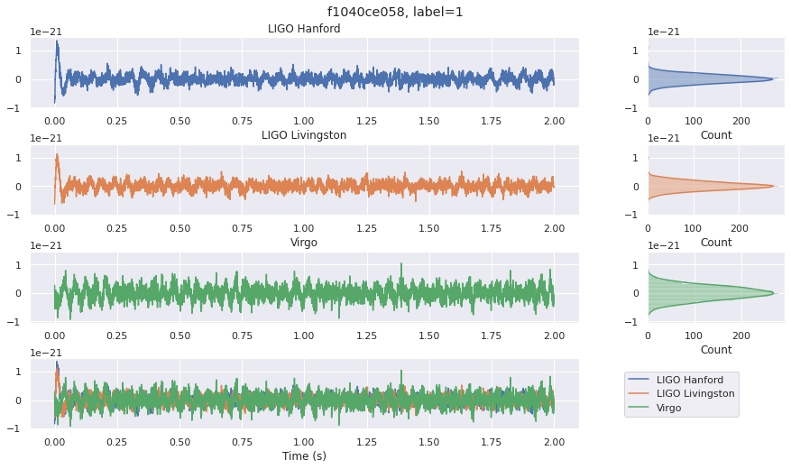
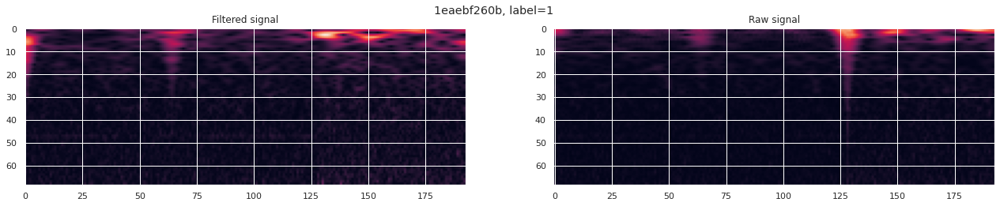
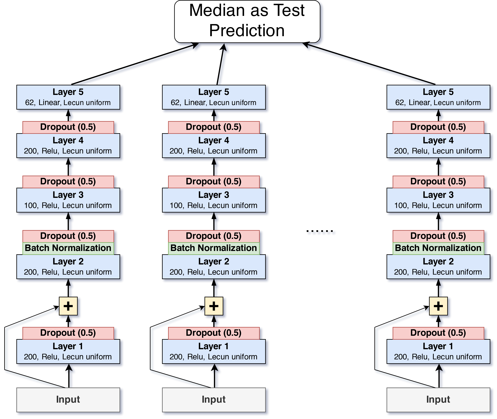

Ning Liu
Machine learning and data science code repo on GitHub: machine-learning
G2Net Gravitational Wave Detection
Mission: This 2021 Kaggle competition aims to detect GW signals from the mergers of binary black holes, by building machine learning models to analyze simulated GW time-series data from 3 earth-based detectors.
Key features: High-pass filtered signal samples.
Model: 1-D CNN with batch normalization, GeM pooling and Silu activation layers.
GitHub: /machine-learning/tree/master/03_G2Net_gravitational_wave_detection
Exploratory Data Analysis Notebook:

 [G2Net_gravitational_wave_detection_EDA.ipynb]
[G2Net_gravitational_wave_detection_EDA.ipynb]
Modeling Notebook:

 [G2Net_CNN1D_GeM_SGDW_Highpass.ipynb]
[G2Net_CNN1D_GeM_SGDW_Highpass.ipynb]
 
Web Traffic Time Series Forecasting
Mission: This 2017 Kaggle competition aims at the problem of forecasting multiple time series, the future web traffic for approximately 145,000 Wikipedia articles.
Key features: Seasonality; log1p transformed visits; The medians of target lags.
Model: DNN with bagging. Wavenet.
GitHub: /machine-learning/tree/master/02_web_traffic_time_series_forecasting
Exploratory Data Analysis Notebook:

 [web_traffic_forecasting_EDA.ipynb]
[web_traffic_forecasting_EDA.ipynb]
Modeling Notebook:

 [web_traffic_forecasting_DNN.ipynb]
[web_traffic_forecasting_DNN.ipynb]

M5 Forecasting - Accuracy
Mission: The 2020 Kaggle competition uses hierarchical sales data from Walmart, the largest company by revenue, to forecast daily sales for the next 28 days.
Key features: Grouped explanatory variables; Rolling statistics of target lags.
Model: Ensemble of gradient boosting regression trees for each local ID group.
GitHub: /machine-learning/tree/master/01_m5-forecasting-accuracy
Notebook:

 [m5_sales_accuracy_ensemble_gbt.ipynb]
[m5_sales_accuracy_ensemble_gbt.ipynb]

Catch Joe
Mission: Given a dataset of users activities of an online system, build a machine learning model that can identify a specific user with user_id=0 (codename Joe).
Key features: Vectorized site visiting records, with TF-IDF N-Gram normalized to keep each user's site visiting order; User demographic features and client systems.
Model: Random forest, gradient boosting, DNN.
GitHub: /machine-learning/tree/master/00_catch_joe
Notebook:

 [catch_joe.ipynb]
[catch_joe.ipynb]
Bootstrap Price Time Series
Mission: Explores time series bootstrapping methods to synthesize financial market price/return paths, which are useful for quantitative strategy development with robustness simulation and backtesting.
GitHub: https://github.com/0liu/bootstrap-price-time-series
Notebook: [Bootstrapping Price Time Series.ipynb]